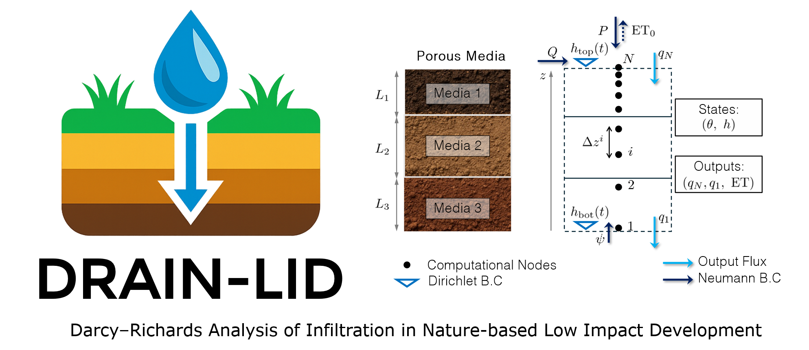

Interactive design-space visualization from the DRAIN-LID database

Loading data…
Axes in 3D plots: area-ratio [%] (ratio between LID footprint and upstream catchment area),
media depth \(L_{d}\) [m], and time to peak \(t_{p}\) [min].
Click any point in the 3D plots to visualize its inflow and outflow hydrographs
(stored only for scenarios with intermediate peak flow reduction).
This interactive explorer was developed by Marcus N. Gomes Jr., PhD.
Scenario ensembles are generated by coupling a mixed-form Richards equation solver
(with van Genuchten–Mualem parameters from Carsel & Parrish) to a Nash-type
inflow hydrograph. Designs span combinations of soil type, media depth, effective
precipitation, area-ratio ( \(A_{\mathrm{TC}}/A_{\mathrm{up}}\) ), and time to peak, allowing
systematic assessment of bioretention hydrologic performance.